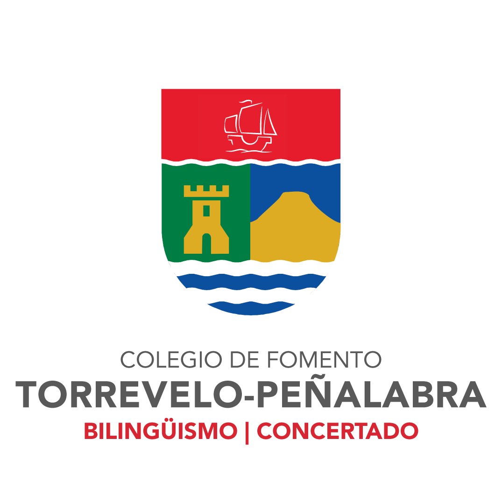

Ingenieria Aeroespacial

Centro Educativo:Universidad Alfonso X El Sabio
Duración: Septiembre 2021 - Mayo 2025
Bachillerato de Excelencia

Centro Educativo:Colegio Torrevelo - Peñalabra
Duración: Septiembre 2019 - Mayo 2021